朝聖之路徒步日誌
從台灣出發，經法國 SJPP 踏上 Camino Francés。34 天徒步、約 1,000 公里，走過聖地牙哥，再延伸到大西洋的 Fisterra 與 Muxía。
這裡收藏 38 篇真實旅程紀錄：有清晨摸黑的山路、42 度熱浪、水泡與迷路，也有紅酒、陌生人的善意，以及走到世界盡頭後才慢慢懂得的事。

找到你想看的那一天
啟程前奏｜從台灣出發，抵達 SJPP
把日常留在身後，經過轉機與長途交通，終於抵達法國之路的起點。

跨越庇里牛斯山與納瓦拉
從 SJPP 翻越山脈，走進森林、溪谷與西班牙北部的小鎮。第一週就學會：慢一點，才能走得更遠。
1480m、六千大卡、老奶奶的生日
2026 年 5 月 21 日 · SJPP → Roncesvalles
清晨六點，13 度的空氣涼得讓人清醒。微涼的風中夾雜著咖啡與麵包的香氣。
閱讀這一天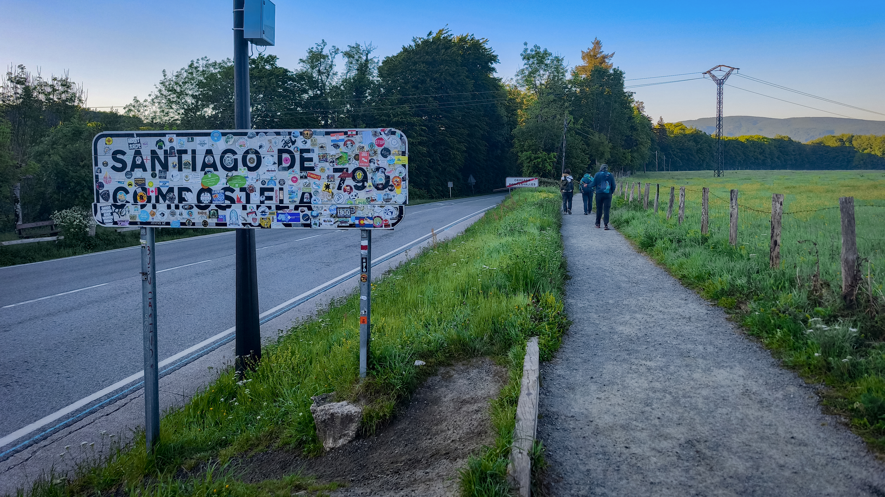
森林、溪水、橋樑之村
2026 年 5 月 22 日 · Roncesvalles → Zubiri · 21km
公立庇護所的規矩很鐵，晚上十點，大門準時上鎖。
閱讀這一天
摸黑出發、米其林、純金教堂
2026 年 5 月 23 日 · Zubiri → Pamplona · 20km
為了搶庇護所的床位，四點多我們摸黑出發。天還沒亮，靠頭燈照路。
閱讀這一天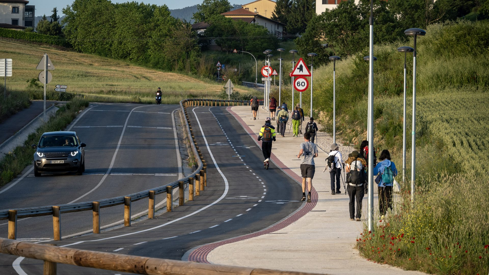
寬恕之丘、警察攔截、皇后之橋
2026 年 5 月 24 日 · Pamplona → Puente la Reina · 24km
趕在日出前再次出發。或許是週末的關係，清晨五點的酒吧外，還留著昨夜狂歡的人潮。揹起行囊，就這樣靜靜地跟這座還在微醺的城市擦肩而過。
閱讀這一天
星空、韓國奶奶與100公里—Puente la Reina → Estella
2026 年 5 月 25 日 · Puente la Reina → Estella · 22.5km
今天再次摸黑出發。在皇后之橋遇見滿天星斗，架起相機拍下縮時攝影，一回頭夥伴卻都走遠了。
閱讀這一天
紅酒噴泉、夏日初雪與台灣同鄉—Estella → Los Arcos
2026 年 5 月 26 日 · Estella → Los Arcos · 21km
依然趁著天未亮提早啟程。我們捨棄了早上七點的朝聖者送行活動，因為今天有更重要的目標——前往整條朝聖之路上最魔幻、最著名的景點——Irache 紅酒噴泉。
閱讀這一天走進拉里奧哈：紅酒、葡萄園與人情味
沿著葡萄園與酒鄉前進，從月桂街 Tapas 到教堂庇護所，旅伴和路上的善意逐漸成為日常。
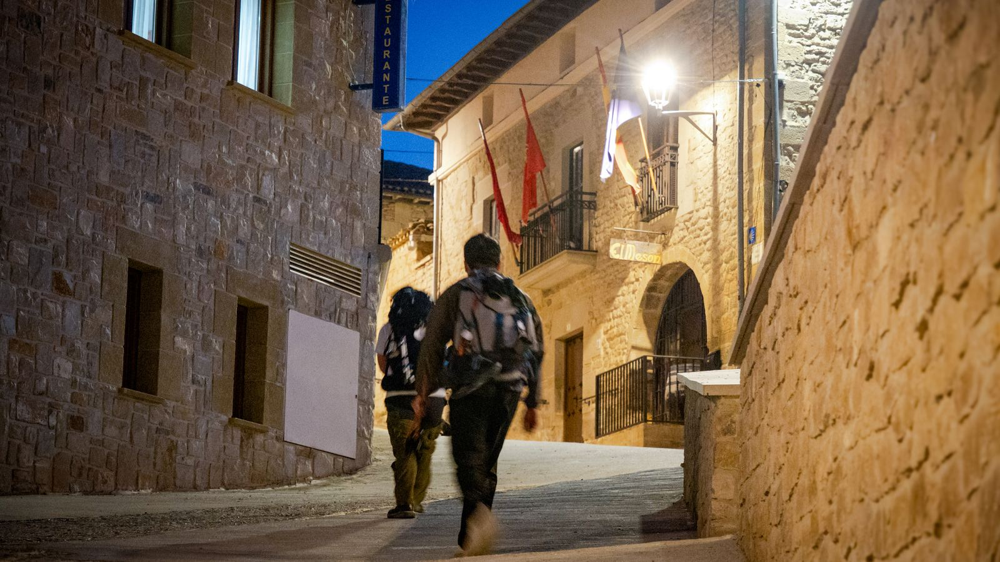
唱歌奶奶、陽傘支架與月桂街—Los Arcos → Logroño
2026 年 5 月 27 日 · Los Arcos → Logroño · 28km
迎著絕美的晨曦出發。今天，我們正式踏進了西班牙著名的酒鄉 Logroño。隨著空拍機升空，換個視角，將這片被晨光包圍的絕美大地盡收眼底。
閱讀這一天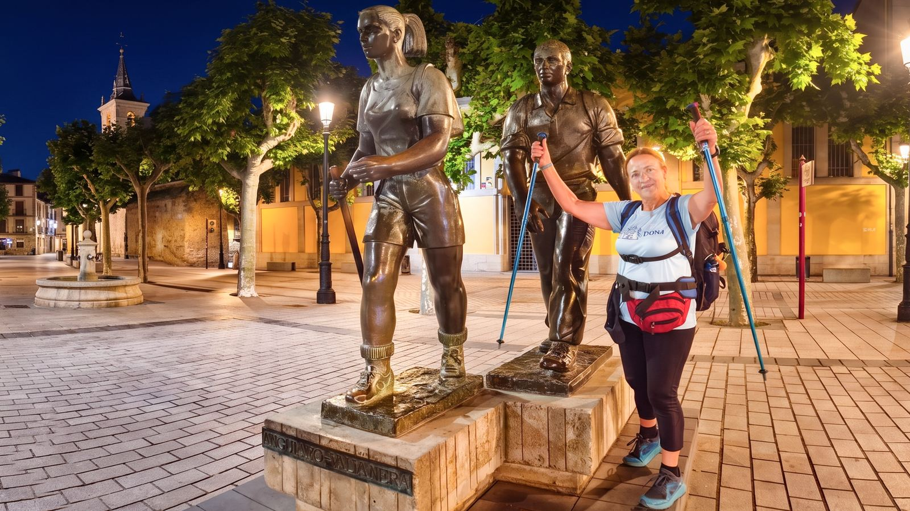
鏡面湖景、奧斯本公牛與冰啤酒—Logroño → Nájera
2026 年 5 月 28 日 · Logroño → Nájera · 29km
從 Logroño 出發前往 Nájera。為了避開中午的烈日，我們再次選擇摸黑上路。提早出發，就是高溫下徒步的最佳策略。
閱讀這一天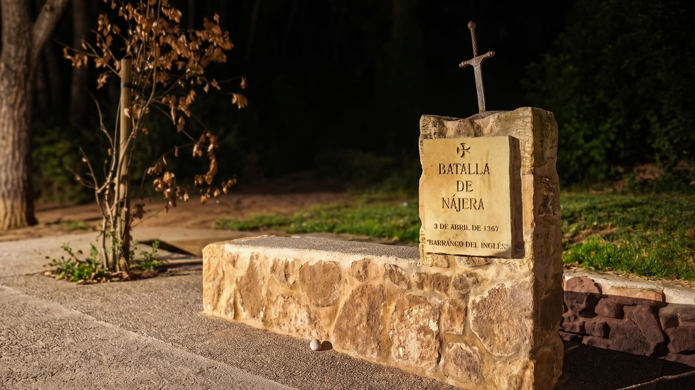
火燒日出、Windows麥田與Grañón教堂庇護所—Nájera → Grañón
2026 年 5 月 29 日 · Nájera → Grañón · 22km
摸黑出發！抬頭驚見史詩級火燒日出。天空被點燃，濃烈橙紅光影點亮朝聖路。每天的日出都獨一無二，畫面交給無人機。上帝視角解鎖火燒雲的震撼。
閱讀這一天
晨曦、香港女孩與岩洞教堂—Tosantos的自由捐贈之夜
2026 年 5 月 30 日 · Grañón → Tosantos · 27km
法國朝聖之路走到第 10 天，身體開始習慣這條路的節奏，依舊搶在日出之前，再次背起行囊啟程。
閱讀這一天梅塞塔高原：在遼闊與烈日之間
平坦地平線看似簡單，長距離與熱浪卻考驗耐心；也在這段路上遇見難忘的同行者。

貓掌印、蠟章與千元羊毛襪—翻越山頂的絕美視野
2026 年 5 月 31 日 · Tosantos → Cardeñuela Riopico · 23km
才剛走出庇護所，就遇到小貓攔路討摸。完全抵擋不住撒嬌攻勢，蹲下好好享受了一番；牠還順便送了我一個朝聖路上絕無僅有的專屬紀念「貓爪印」。
閱讀這一天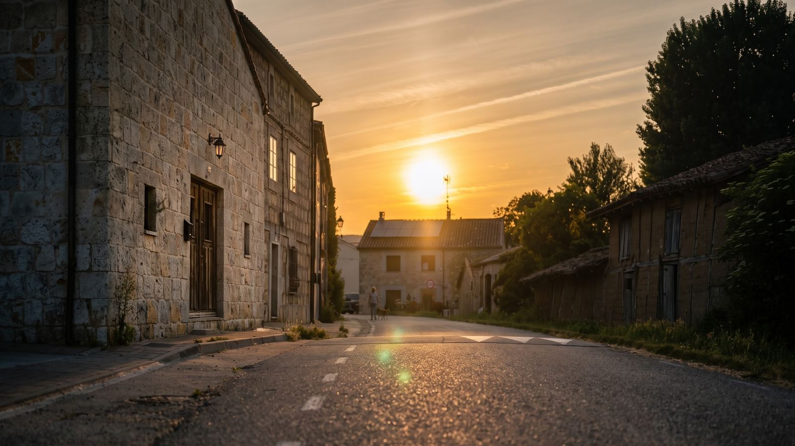
Burgos 休息日—13km 的慢步與哥德式震撼
2026 年 6 月 1 日 · Cardeñuela Riopico → Burgos · 13km
終於迎來久違的休息日！睡到太陽升起才慢慢晃出門。今天只有輕鬆的 13 公里，放慢腳步，享受難得不趕路的愜意節奏。
閱讀這一天
密室逃脫、高速公路與彩虹雲—Hontanas 的第一顆水泡
2026 年 6 月 2 日 · Burgos → Hontanas · 34km
清晨出門差點被困在庇護所。十幾個人站在鎖著的小門前一臉問號，在黑夜裡折騰了將近半小時，才發現關鍵按鈕竟然隱藏在右側牆壁。一大早就上演庇護所「密室逃脫」。
閱讀這一天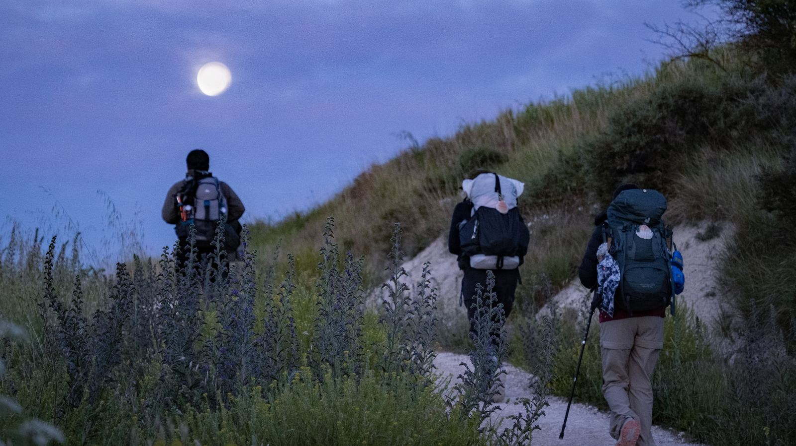
破曉修道院、18% 陡坡與警察印章—泳池旁的慶生
2026 年 6 月 3 日 · Hontanas → Boadilla del Camino · 31km
天還沒亮，摸黑從小鎮啟程。荒野中溫度只有 8 度，整條朝聖路上只有幾盞頭燈在黑暗中隱約閃爍。
閱讀這一天
心流、貝殼與修女的愛心吊飾
2026 年 6 月 4 日 · Boadilla del Camino → Carrión de los Condes · 24km
天還沒亮再度背起行囊，迎著晨光，路邊的朝聖者剪影完美詮釋了這條路——胸口的「貝殼」象徵所有路線匯聚終點，「星星」則代表聖地牙哥原意「繁星之野」。
閱讀這一天
72 歲韓國奶奶、半程碑與 40 公里的道別
2026 年 6 月 5 日 · Carrión de los Condes → Sahagún · 40km
昨天刻意只走 24 公里，除了為入住修女庇護所，更是為了今天——趁著清晨體能滿血，帶上 700ml 的水，直接穿越 17 公里的無人區。
閱讀這一天
36 公里、日出與中文小教室
2026 年 6 月 6 日 · Sahagún → Mansilla de las Mulas · 36km
繼續摸黑啟程，今天的目標是直推將近 40 公里外的 Mansilla de las Mulas。摸黑推進的回報，就是迎接日出——看著陽光慢慢把整條朝聖之路照亮，百看不厭。
閱讀這一天León 與中世紀小鎮
離開無邊草原，走進古城、哥德式建築與中世紀節慶，旅程的風景開始有了新的層次。

León：拳擊冠軍的蠟章、光之殿堂與酒吧巡禮
2026 年 6 月 7 日 · Mansilla de las Mulas → León · 19km
告別連續幾天無邊無際的草原，漫長的梅塞塔高原正式結束。今天相對輕鬆，迎著金燦燦的日出往大城市 León 出發！
閱讀這一天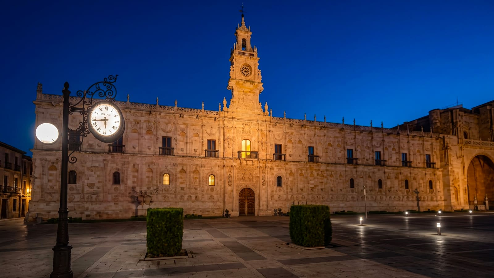
Hospital de Órbigo：穿越到 15 世紀的中世紀嘉年華
2026 年 6 月 8 日 · León → Hospital de Órbigo · 20km
清晨摸黑啟程，這座城市還在微醺。跟白天 Chill 的氛圍完全不同，León 街頭許多是喝到清晨的醉漢——提醒大家：摸黑出發務必結伴同行，安全第一！清晨的鳥叫有夠大，不過一半其實是酒吧旁的人發出的，這座城市的專屬 B…
閱讀這一天
高第建築、留言本的巧合、註定的相遇
2026 年 6 月 9 日 · Hospital de Órbigo → Rabanal del Camino · 37km
昨晚 Hospital de Órbigo 的中世紀長槍對決實在太瘋狂了，戰馬嘶鳴、長槍折斷的畫面到現在還在腦海裡轉。帶著那份熱血，我們今天依然摸黑出發——今天距離不短，要一口氣推進 37 公里，雙腳才剛醒就得上工，有夠硬。
閱讀這一天鐵十字架、山路與加利西亞入口
放下石頭，翻過山口，從 Bierzo 走向 O Cebreiro 與 Samos。每一次爬升，也像重新整理自己。

鐵十字架、放下石頭、膝蓋不是自己的
2026 年 6 月 10 日 · Rabanal del Camino → Ponferrada · 31km
第 21 天，清晨出發，氣溫大概只剩下 5 度。走了三個禮拜，這是我難得覺得有點冷的一個早晨。天還沒亮，我們就踩著滿地的碎石坡摸黑往上爬，每一步都踩得小心翼翼，迎著漸漸升起的日出，一路往高處走。
閱讀這一天
進入倒數 200km、韓國人朝聖之謎
2026 年 6 月 11 日 · Ponferrada → Villafranca del Bierzo · 26km 🍇
第 22 天，天還沒全亮我就出門了。Ponferrada 的聖殿騎士古堡泡在晨曦裡，安靜得有點不真實——昨天它還氣勢磅礡像電影場景，今天清晨卻溫柔得像在目送我們出發。我踩著剛甦醒的光線，繼續往西走，正式進入倒數 20…
閱讀這一天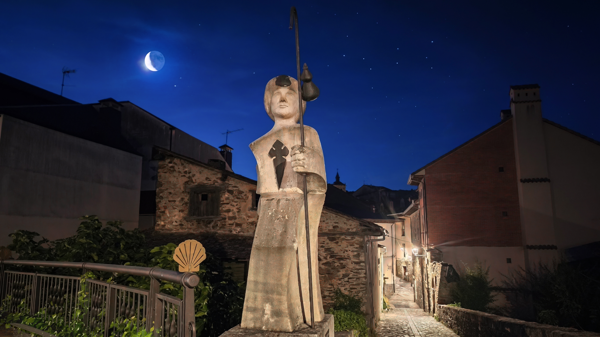
O Cebreiro、最後的爬升、人生也是這樣
2026 年 6 月 12 日 · Villafranca del Bierzo → O Cebreiro · 29km
第二十三天，29 公里、爬升 1085 公尺——出發前看到這個數字，心裡只有兩個字：硬仗。這是整條法國之路數一數二陡的路段，傳說中的「最後的爬升」。趁著月色摸黑出發，沿著潺潺的流水聲往前走，頭燈往地上一照，居然捕捉到…
閱讀這一天
Samos、多走 7 公里、克羅埃西亞爺爺
2026 年 6 月 13 日 · O Cebreiro → Samos · 31.7km
伴著月色摸黑出發，告別昨天那片最美的日落山頂。抬頭一看，天上還掛著一彎細細的新月，配著滿天星星，安靜到只聽得見自己的腳步聲——這種開場，一天的心情直接先加滿一半。
閱讀這一天最後 100 公里，走進 Santiago
從 Portomarín 的 100 公里石碑，到 Melide 的章魚與 O Pedrouzo 的最後一夜，終於走進聖地牙哥大教堂。

100km 石碑、捨不得的過程
2026 年 6 月 14 日 · Samos → Portomarín · 38km
摸黑離開 Samos 小鎮，鑽進漆黑的森林小徑，心臟真的要很大顆——幾隻野狗突然衝出來狂吠，還好我們有結伴，野狗看人不只一個也不敢靠近。這時候深刻體悟到夥伴的重要性，大清早直接驚嚇醒腦。
閱讀這一天
德州志工、手寫明信片、被在乎的感覺
2026 年 6 月 15 日 · Portomarín → Ligonde · 16.5km
昨晚下了一場大雨，本來有點擔心，結果老天給了超美好的清晨！今天行程超佛心，從 Portomarín 到 Ligonde 只有短短 16.5 公里。為什麼刻意走這麼短？因為今晚要去朝聖之路上最後一個自由捐贈的庇護所！放…
閱讀這一天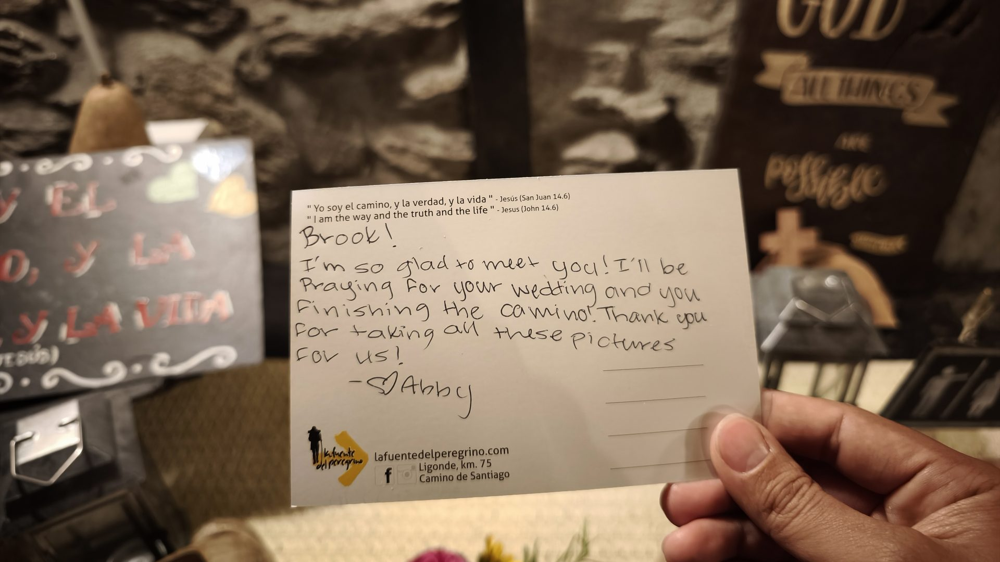
Melide 章魚、世界盃、停下來的時候
2026 年 6 月 16 日 · Ligonde → Melide · 25km
一早，志工準備了暖心早餐，桌上竟然還有給每個人的手寫卡片，字裡行間滿滿祝福。帶著這份心意出發，心裡真的暖暖的。
閱讀這一天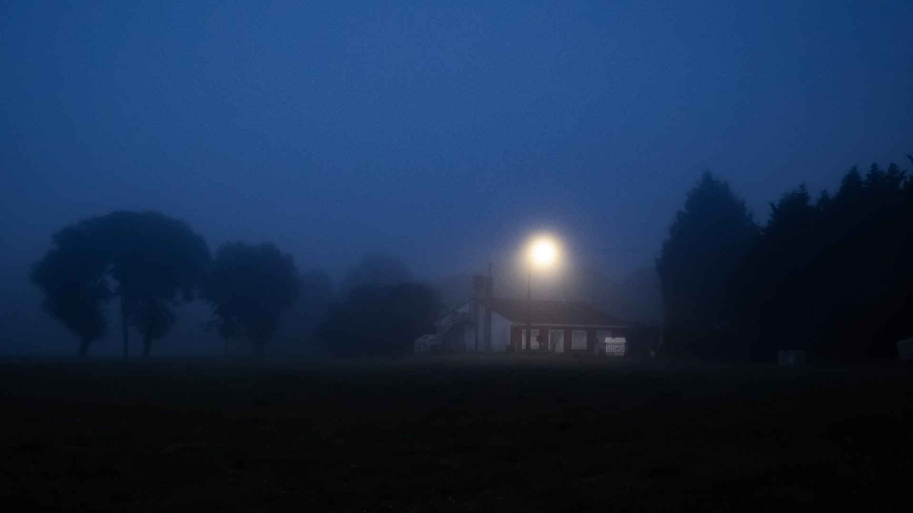
霧中行走、畢業前夕、終於睡到下鋪
2026 年 6 月 17 日 · Melide → O Pedrouzo · 33km
今天是第 28 天，前往 O Pedrouzo，距離 33 公里——抵達終點聖地牙哥前的最後一個大站。
閱讀這一天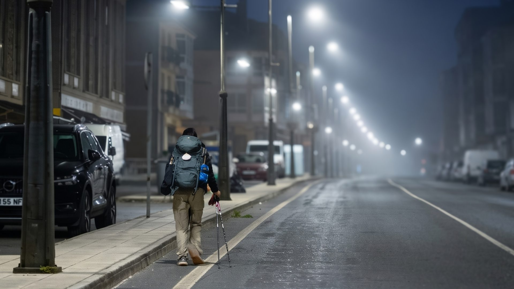
Santiago、800公里後、抵達不是為了停下
2026 年 6 月 18 日 · O Pedrouzo → Santiago de Compostela · 20km
朝聖之路第 29 天！距離 Santiago 大教堂，只剩最後的 20 公里。
閱讀這一天離開聖城，走向世界盡頭
抵達 Santiago 還不是故事的終點。繼續往西走到 Fisterra，再走向 Muxía，把最後的腳步交給大西洋。

Negreira、離開聖城、熟悉的寧靜
2026 年 6 月 19 日 · Santiago → Negreira · 22km
朝聖之路第 30 天！聖地牙哥的早晨，被厚厚的迷霧籠罩著。但這裡還不是終點——我們背起行囊，繼續走向「世界盡頭」。
閱讀這一天
比臉大炸豬排、三年半的步行者
2026 年 6 月 20 日 · Negreira → Santa Mariña · 21km
第 31 天，在加利西亞的濃霧中啟程。晨光微微透過雲層，眼前的一切，寧靜又優美。
閱讀這一天
Cee、海邊小鎮、啤酒蝦的慰藉
2026 年 6 月 21 日 · Santa Mariña → Cee · 32km
第 32 天，天還沒亮就出發，眼前的加利西亞被大霧完全籠罩。今天是一場 32 公里的硬仗。
閱讀這一天
Fisterra、大地盡頭、0.00km
2026 年 6 月 22 日 · Cee → Fisterra · 21.7km
晨光破曉，沿著平靜的海岸線啟程。金色陽光灑在海面上，波光粼粼——今天要去的地方，是世界盡頭。
閱讀這一天
Muxia、徒步最後一天、與柏油路對話
2026 年 6 月 23 日 · Fisterra → Muxía · 33km
昨晚在 Fisterra，我們看著夕陽沉入深海。今天背起行囊，踏上最後的 33 公里，走向象徵「洗滌與重生」的 Muxía。舊的靈魂已經留在世界盡頭，現在每往前一步，都是全新的自己。
閱讀這一天回程與回家：把旅程帶回日常
搭車回到 Santiago、北上馬德里，最後回到台灣。路走完了，故事卻留在生活裡。

1000公里的句點、火把節、回歸起點
2026 年 6 月 24 日 · Muxía → Santiago de Compostela · 巴士歸途
今天依舊趕在日出前出發！目的地很近——距離只有 1.5 公里的那座 0 公里石碑。即使聽說這裡已經連著一整個禮拜都是陰天，心裡卻還是抱著一絲期待：希望在世界盡頭看見日出的那一刻。
閱讀這一天
馬德里、從一個零公里到另一個零公里
2026 年 6 月 25 日 · Santiago → Madrid · 高鐵北上
昨晚火把節的狂歡，今天終於不用再趕著日出出發了。在庇護所手寫下最後的感動，再次漫步來到聖地牙哥大教堂廣場。坐下來好好吃頓早餐：煎蛋、鬆餅、吐司配啤酒——風裡除了咖啡香，還多了一點離別的味道。享受這慵懶的步調，靜靜把這…
閱讀這一天
回家、紅布條、Buen Camino
2026 年 6 月 26 日 · Madrid → Taiwan · 回家
前往機場的路上，回想從出發前的忐忑與徬徨——不確定一個平常不爬山、不跑步的自己，到底能不能走完；到現在，坐在回程的飛機上。
閱讀這一天故事從抵達 SJPP 開始，也在回家後繼續。
如果你正在準備自己的 Camino，別忘了也可以先看看交通、裝備、預算與沿途美食攻略。